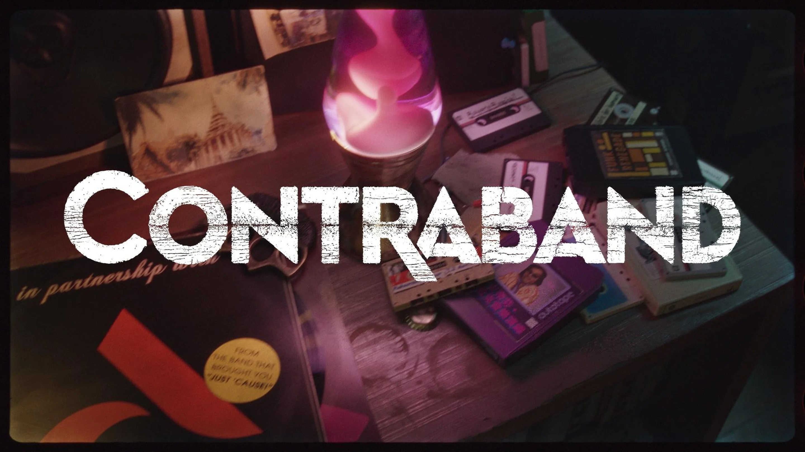
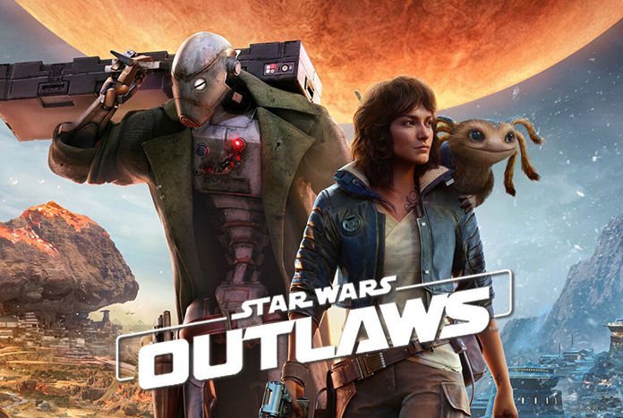
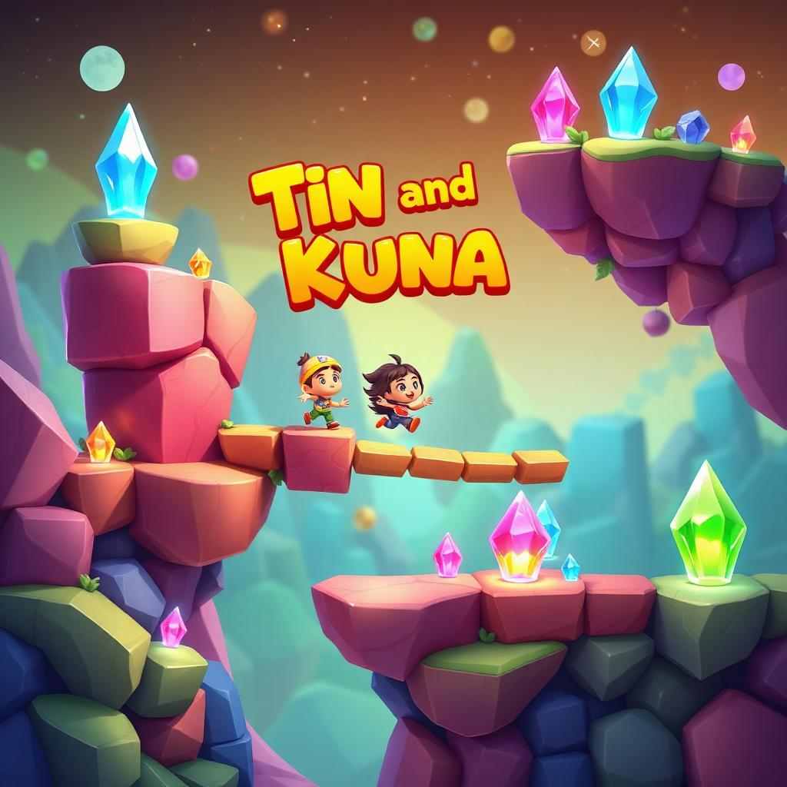
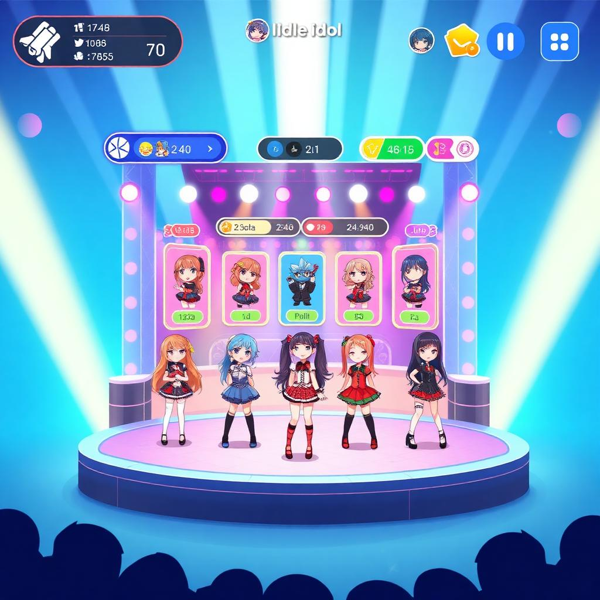
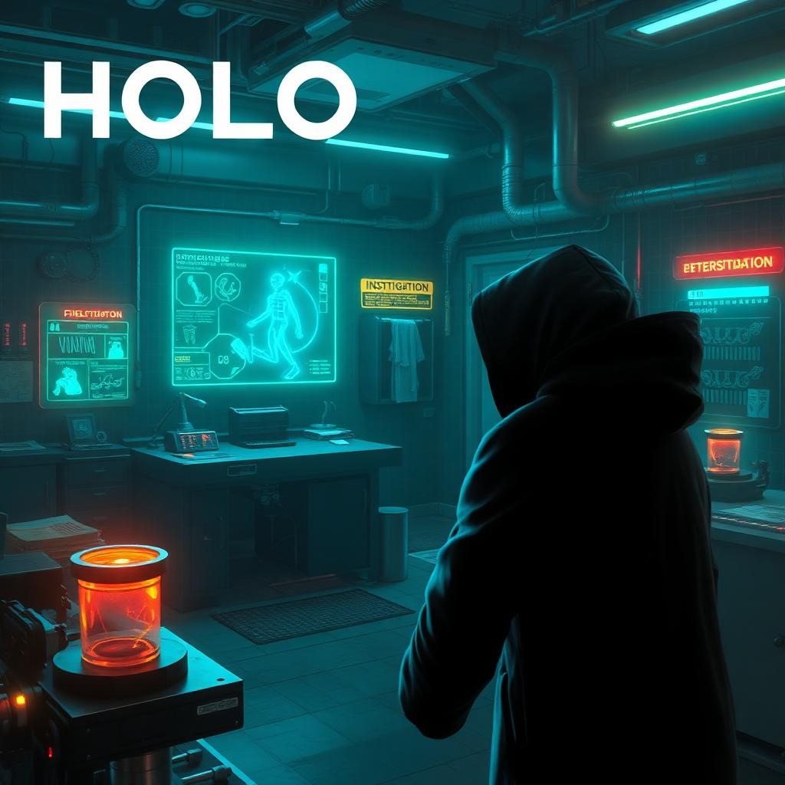
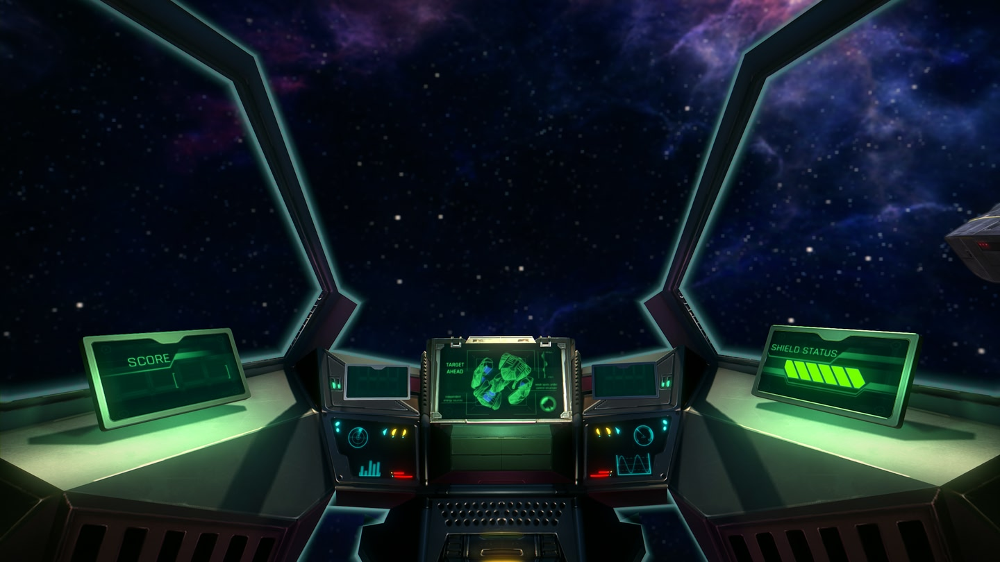
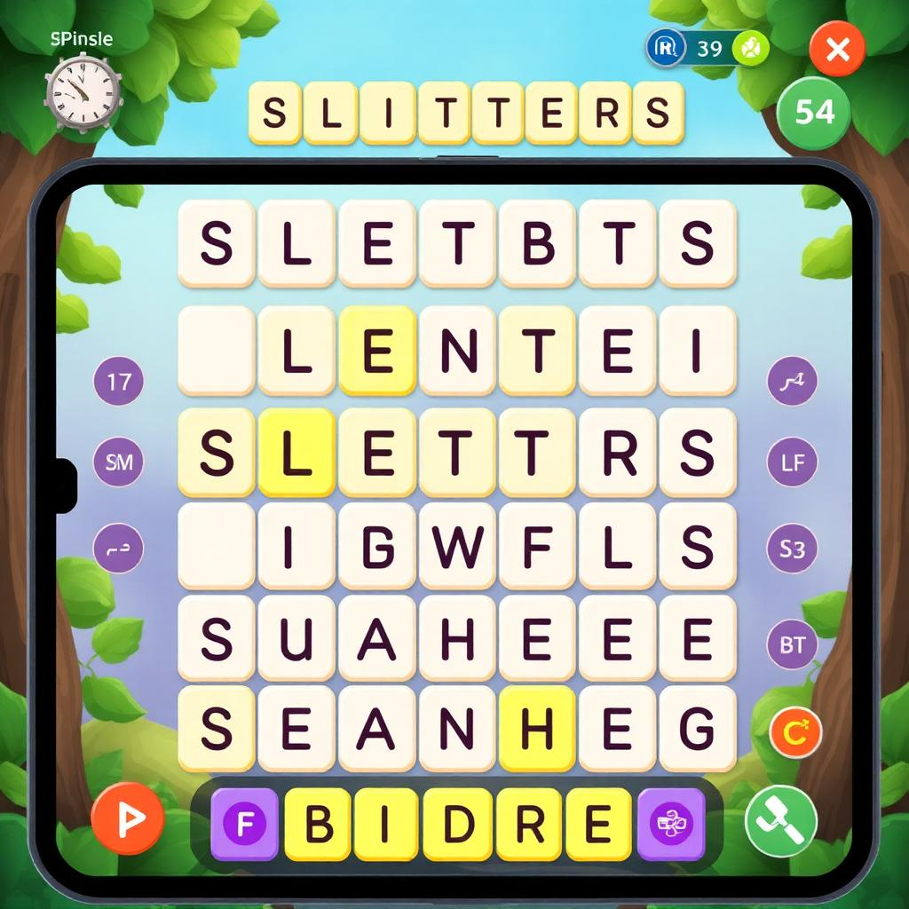
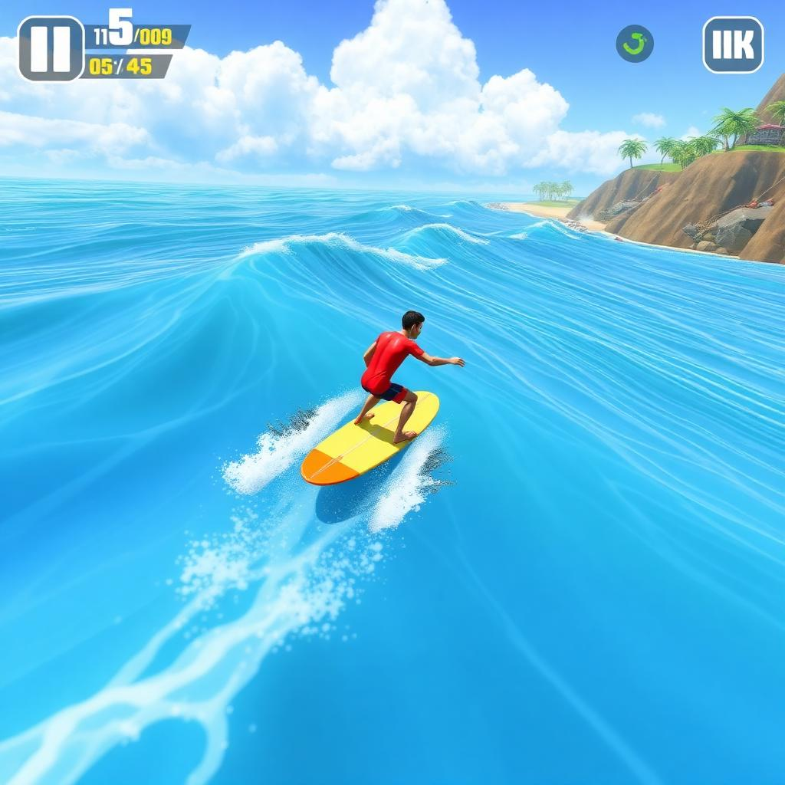
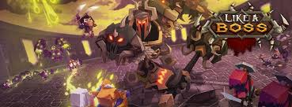
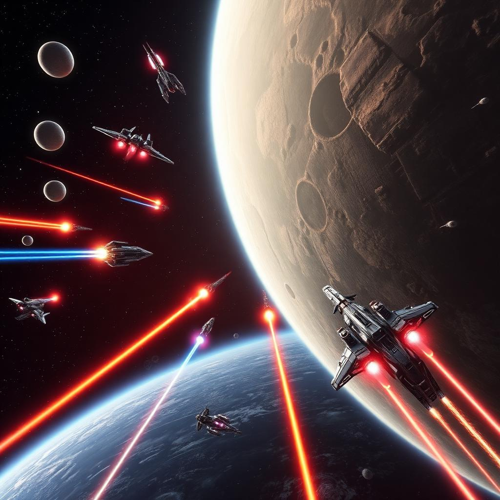

Diego Prates de Andrade
Senior Technical Producer at Avalanche Studios
Production & Strategy professional with 13+ years in AAA and indie development. Experienced in leading engineering and cross-disciplinary teams and partnering with boards and executives on growth, risk, and milestone investments. Skilled in team building, workflow improvement, and multiplatform delivery — always aligning production decisions to maximize player value.
About
Turning Vision Into Reality
As a seasoned Production & Strategy professional with over 13 years in AAA and indie development, I’ve led cross-disciplinary teams and collaborated with publishers, boards, and C-suites to shape portfolios and deliver impact. My experience spans Ubisoft, Samsung, Thunderful, and Avalanche, where I built teams, improved workflows, and aligned projects with both creative vision and business goals.
I’ve managed budgets, risk, and milestone gates, secured publishing deals, and unified technical roadmaps across multiple studios and platforms. With hands-on expertise in Snowdrop, Apex, Unity, and Unreal, I bridge production strategy and technical execution.
Passionate about creating value for players, I thrive in dynamic environments — helping teams adapt, align, and deliver experiences that resonate worldwide.
Game Portfolio
A showcase of the interactive experiences I've helped bring to life across multiple platforms and genres.

Contraband
Senior Technical Producer
Open-world co-op action game from Avalanche Studios in partnership with Microsoft.
While working on Contraband, I led the Core Tech and Live Platform teams, overseeing technical production and ensuring seamless collaboration with the Central Technology Team and Publisher

Star Wars Outlaws
Technical Associate Producer
Open-world Star Wars game where you play as scoundrel Kay Vess in the criminal underworld.
I led the animation, audio, and physics teams, overseeing technical production and ensuring seamless integration of the Snowdrop engine with the game, driving technical innovation and collaboration.
Avatar: Frontiers of Pandora
Technical Associate Producer
First-person action-adventure game set in the Western Frontier of Pandora with stunning visuals.
I led the animation, audio, and physics teams, overseeing technical production and ensuring seamless integration of the Snowdrop engine with the game, driving technical innovation and collaboration.

Tin & Kuna
Executive Producer
Charming adventure platformer featuring a magical journey through beautiful hand-crafted worlds.
I served as Executive Producer on the game project, overseeing high-level strategy and direction, managing publisher relations, budget planning, and timeline management, while collaborating closely with the production team to drive project success.

Idle Idol
Executive Producer
K-Pop idol management game where you build your own entertainment agency and create superstar idols.
I served as Executive Producer on the game project, overseeing high-level strategy and direction, managing publisher relations, budget planning, and timeline management, while collaborating closely with the production team to drive project success.

Holo Crimes
Executive Producer
Detective mystery game featuring holographic crime scene investigation and futuristic forensics.
I served as Executive Producer on the game project, overseeing high-level strategy and direction, managing publisher relations, budget planning, and timeline management, while collaborating closely with the production team to drive project success.

Kepler - Pathfinder
Producer
Space combat game where you fight hordes of enemy ships.
I produced a proof-of-concept VR game and app, leveraging the project to develop and test an in-house engine for VR experiences. I oversaw project planning, resource allocation, and stakeholder communication, ensuring the prototype met technical and creative goals.

Sletters
Programmer / Producer
Innovative word puzzle game combining letter manipulation with strategic thinking and wordplay.
I wore multiple hats as Programmer and Producer on a small Unity game project, developing core features, managing artists and QA, and driving project planning and scheduling to deliver a high-quality result.

Go Surf - The Endless Wave
Producer
Go Surf is a relaxing and challenging experience of ride an endless wave!
I produced the iOS and tvOS ports of this Android game, managing a team of programmers and QA, and driving project planning, development, and testing to deliver a polished and feature-complete experience on Apple platforms.

Like a Boss!
Programmer
Mobile RPG where the player impersonates a dungeon boss.
I was the programmer behind the backend and AI systems for this game, designing and implementing the entire server-side architecture, AI logic, and key systems that powered the game's core functionality and player engagement.

Taikodom - Living Universe
Programmer
Sci-fi MMORPG space combat, ship customization, and galactic exploration.
I contributed to the server-side simulation systems, building and optimizing the code that brought the game world to life, managing complex interactions, and ensuring a stable and responsive experience for players.
Experience
A journey through the gaming industry, from indie studios to AAA development.
Avalanche Studios
Senior Technical Producer
Thunderful Games
Senior Producer
Massive Entertainment
Technical Associate Producer
Samsung - SIDIA
Executive Producer
Lead Programmer / Tecnhical Producer
Diverso Games
Programmer / Producer
Firehorse Studio
Programmer
Hoplon Infotainment
Producer
Programmer
Let's Connect
Ready to discuss your next gaming project or explore collaboration opportunities? I'd love to hear from you.